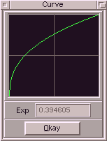

Dieser Modulator erzeugt einen gekrümmten Verlauf. Die Krümmung wird über den
Parameter "Exponent" gesteuert und auch graphisch dargestellt oder kann mit der
Maus verändert werden, indem man die Kurve herumschiebt, bis sie einem gefällt.
Nachfolgend einige Beispiele :
| Variante | Beschreibung |
|---|
| Linear (exp=1.0) | Gibt am zu Samplebeginn 0.0 und am Ende 1.0 zurück. Dazwischen
wird geradlinig = linear übergeblendet. |
| SpeedUp (exp>1.0) | Ähnlich dem vorhergehenden, unterscheidet sich dies dadurch,
das es einen beschleunigten Verlauf erzeugt, das heißt - die
Werte ändern sich anfangs langsamer und gegen Ende schneller. |
| SlowDown (exp<1.0) | Analog zu SpeedUp liefert dies einen gebremsten Verlauf. |
|